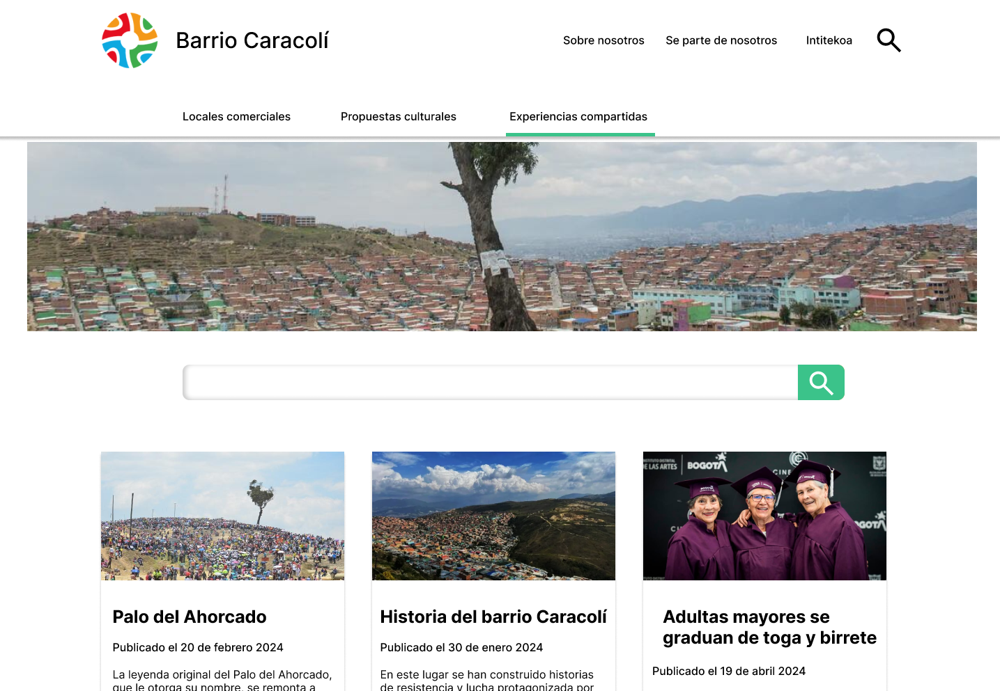
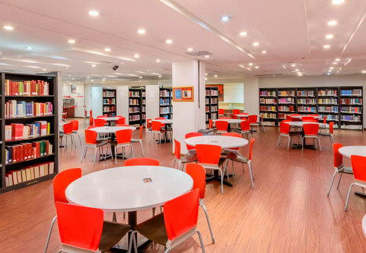
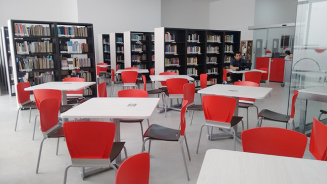

Mi experiencia
Durante mi proyecto de prácticas empresariales, desarrollé el prototipo de una página web para la Fundación de Trabajo Comunitario IntiTekoa. Este desarrollo fue parte de un proyecto más amplio que busca aprovechar los cambios urbanos en la comunidad para fomentar el desarrollo local.
Experiencias laborales previas
Además, tuve una experiencia laboral significativa en la Biblioteca de la Universidad Manuela Beltrán, donde desempeñé múltiples funciones como bibliotecario. Entre mis responsabilidades se incluyen:
- Atención al usuario: Brindé asistencia y orientación a los usuarios de la biblioteca.
- Auditoría de planes de curso: Realicé revisiones y evaluaciones de los planes de estudio.
- Búsqueda de bibliografía: Localicé y seleccioné materiales bibliográficos relevantes.
- Asesoría en bases de datos: Ofrecí orientación sobre el uso de diversas bases de datos académicas.
- Actualización de bases de datos: Mantuve actualizada la información en las bases de datos
- Manejo, organización y conservación de materiales bibliográficos: Administré y preservé la colección de la biblioteca.
- Inventario de la colección bibliográfica: Realicé inventarios y catalogaciones de los recursos bibliográficos
- Actualización de equipos de cómputo: Supervisé y mejoré el equipo informático de la biblioteca.

